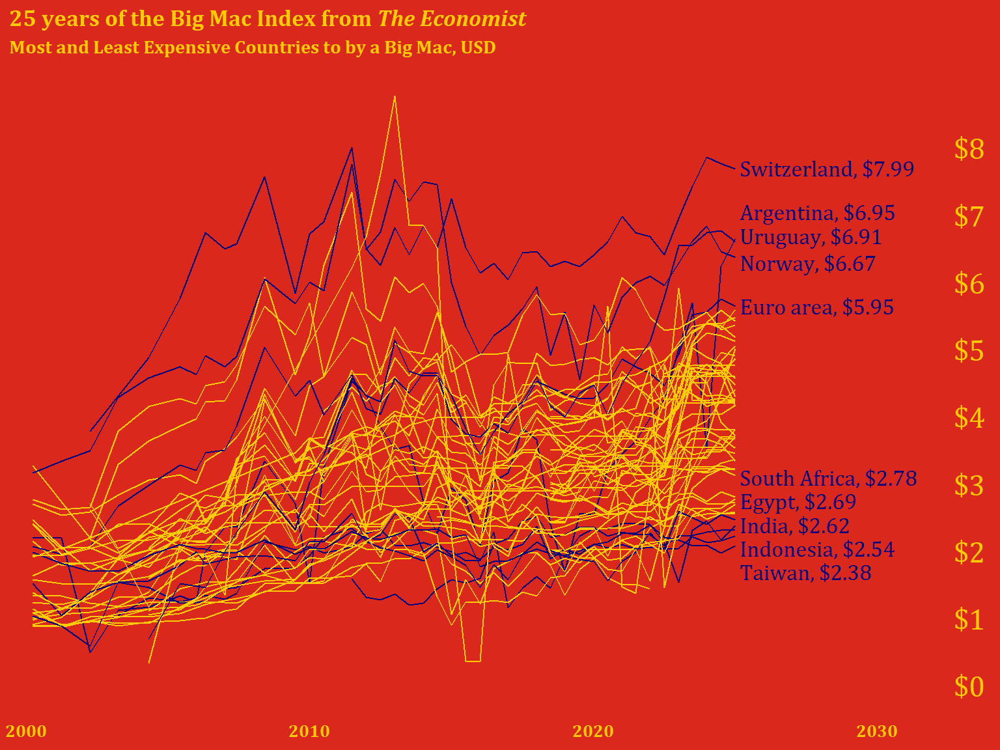

Code
library(tidyverse)
library(ggtext)
library(extrafont)
library(plotly)
fonts()Author note: I’m letting ClaudeAI take the wheel here (maybe because Anthropic has partnered with The Economist and this’ll be cute for them).
This blog post was created through a collaborative process with Claude (Anthropic). Sections explicitly generated by Claude are marked with 🤖. The code comparison section demonstrates different approaches to the same visualization problem—showing how human and AI problem-solving can complement each other.
🤖 Section written by Claude
In September 1986, The Economist journalist Pam Woodall introduced the Big Mac Index as a semi-humorous illustration of Purchasing Power Parity (PPP). The theory behind it—PPP—suggests that exchange rates should adjust so that identical goods cost the same in different countries. Since McDonald’s Big Macs are sold in nearly identical form across 50+ countries, they make for a surprisingly useful economic indicator.
McDonald’s Big Mac was chosen because of the prevalence of the fast food chain worldwide, and because the sandwich remains largely the same across all countries. The Big Mac Index works because:
While economists widely cite the Big Mac index as a reasonable real-world measurement of purchasing power parity, it was not intended to be a legitimate tool for exchange rate evaluation, though it is now globally recognized and featured in many academic textbooks and reports. The Economist has published this index regularly since 1986, creating a rich dataset for analysis.
🤖 Section written by Claude
The data comes from The Economist’s GitHub repository, where they maintain historical Big Mac prices and calculated currency valuations. The dataset includes:
Below is the original code exactly as written, with my commentary on the thought process and decisions.
library(tidyverse)
library(ggtext)
library(extrafont)
library(plotly)
fonts()🤖 Claude’s Commentary: This setup is clean and minimal. Loading plotly suggests the author may have experimented with interactive versions (though it’s not used in the final plot). The fonts() call displays available fonts—useful during development but could be removed for production.
full <- read_csv("data/big-mac-full-index.csv")
raw <- read_csv("data/big-mac-raw-index.csv")🤖 Claude’s Commentary: Both datasets are loaded, though only full is used. This is common during exploratory analysis—keeping raw available in case you need to cross-reference or pivot approaches.
delta <-
full |>
filter(date %in% as.Date(c('2000-04-01', '2025-01-01'))) |>
select(date, name, dollar_price) |>
pivot_wider(names_from = date,
values_from = dollar_price,
names_repair = 'minimal') |>
select(name, before = `2000-04-01`, after = `2025-01-01`) |>
filter(!is.na(before), !is.na(after)) |>
arrange(name)
percent_change <-
delta |>
mutate(pct_change = round(((after-before)/before), digits = 2),
pct_label = scales::percent(pct_change)) |>
arrange(desc(pct_change))🤖 Claude’s Commentary: This is a smart approach to calculating change over time. The use of pivot_wider() is particularly elegant—it transforms dates into columns, making it easy to calculate the difference. The names_repair = 'minimal' argument is important because date columns would otherwise be automatically “cleaned” into invalid R names. Creating both numeric (pct_change) and formatted (pct_label) versions shows good data hygiene—you keep the raw numbers for potential calculations while having display-ready labels.
Potential consideration: This approach filters to countries present in both time periods. Countries that started reporting after 2000 or stopped before 2025 are excluded, which is the right call for a “change over 25 years” metric.
destaca <-
full |>
filter(date %in% as.Date('2025-01-01'), !is.na(dollar_price)) |>
arrange(date, desc(dollar_price)) %>%
.[c(1:5, 50:54), ]
labels <-
destaca |>
transmute(label = paste0(name, ", $", round(dollar_price, digits = 2)))🤖 Claude’s Commentary: This is where things get interesting. The use of .[c(1:5, 50:54), ] is base R subsetting—grabbing rows 1-5 (most expensive) and 50-54 (least expensive). This works but is brittle: if the dataset has fewer than 54 rows, this breaks. Also, the specific row indices assume a certain ordering.
Design insight: The author is making an aesthetic choice here—exactly 10 countries highlighted, split between extremes. This creates visual balance.
The transmute() for labels is efficient—it’s like mutate() but keeps only the new column. The formatted labels are ready-to-use for annotation.
full |>
mutate(check = if_else(is.na(dollar_price) & date == as.Date('2025-01-01'), 'na', 'good'),
hl = if_else(name %in% destaca$name, "yes", "no")) |>
filter(check == 'good') |>
select(date, name, dollar_price, hl) |>
ggplot(aes(x = date, y = dollar_price, group = name)) +
geom_line(aes(color = hl),
show.legend = FALSE) +
labs(title = '25 years of the Big Mac Index from *The Economist*',
subtitle = 'Most and Least Expensive Countries to by a Big Mac, USD')+
scale_x_date(date_labels = '%Y',
limits = as.Date(c('1999-06-01', '2034-01-01')),
expand = c(0, 0)) +
scale_y_continuous(breaks = c(0:8)) +
scale_color_manual(values = c("#FFCC00", "#05007B", "black")) +
annotate('text',
x = as.Date('2033-04-09'),
y = 0.3:8.3,
color = "#FFCC00",
label = paste0("$", 0:8),
size = 6,
family = 'Cambria') +
annotate("text",
x = as.Date("2025-02-28"),
y = c(8, 7.35, 7, 6.6, 5.95, 3.4, 3.05, 2.7, 2.35, 2),
label = labels$label,
family = 'Cambria',
size = 4.5,
color = "#05007B",
hjust = 0) +
theme_minimal() +
theme(
axis.ticks.y = element_blank(),
axis.text.y = element_blank(),
axis.text.x = element_text(color = "#FFCC00", size = 10),
panel.grid = element_blank(),
text = element_text(family = "Cambria", face = "bold", color = "#FFCC00"),
plot.background = element_rect(fill = "#DA291C", color = "#DA291C"),
panel.background = element_rect(fill = "#DA291C", color = "#DA291C"),
axis.title = element_blank(),
plot.title = element_markdown(),
) 
🤖 Claude’s Commentary on this approach:
What works really well:
check variable elegantly filters out countries with no 2025 data, ensuring we only plot complete seriesc(8, 7.35, 7, 6.6, 5.95...)) were clearly hand-tuned to avoid overlaps—this is often the only way to get perfect label placementlimits = as.Date(c('1999-06-01', '2034-01-01')) is clever—it extends well into the future to create space for labels on the rightPotential improvements:
'2033-04-09') seems arbitrary—unclear why this specific dateshow.legend = FALSE cleans up the plot, there’s no legend explaining what the colored lines mean (though it’s somewhat obvious from context)Overall assessment: This is a strong visualization with intentional design choices. The manual positioning shows attention to detail, and the McDonald’s color scheme is a sophisticated branding choice. The code is readable and the pipeline logic is clear. The brittleness around hardcoded positions is the main weakness—but sometimes that’s necessary for publication-quality plots.
🤖 This entire section written and coded by Claude
Here’s how I would approach the same visualization, with a focus on making the code more robust and self-documenting:
library(tidyverse)
library(ggtext)
library(scales)
# Read data
full <- read_csv("data/big-mac-full-index.csv", show_col_types = FALSE)# Filter to complete time series (countries with 2025 data)
countries_with_2025 <- full |>
filter(date == as.Date('2025-01-01'), !is.na(dollar_price)) |>
pull(name)
plot_data <- full |>
filter(name %in% countries_with_2025,
date >= as.Date('2000-01-01')) |>
select(date, name, dollar_price)
# Identify extreme countries more robustly
extremes_2025 <- plot_data |>
filter(date == max(date)) |>
arrange(desc(dollar_price)) |>
slice(c(1:5, (n()-4):n())) |> # Top 5 and bottom 5
mutate(
label = paste0(name, ", ", dollar(dollar_price, accuracy = 0.01)),
# Calculate label positions with spacing
y_pos = dollar_price,
x_pos = max(plot_data$date) + days(60)
)
# Add highlight flag to plot data
plot_data <- plot_data |>
mutate(
highlight = case_when(
name %in% extremes_2025$name ~ "labeled",
TRUE ~ "background"
)
)🤖 My reasoning:
slice(c(1:5, (n()-4):n())) which adapts to any dataset sizemax(date) + days(60)) rather than hardcoding datesdollar() from scales for consistent currency formattingcase_when()# Define McDonald's colors
mc_red <- "#DA291C"
mc_yellow <- "#FFCC00"
mc_blue <- "#27251F" # Using a dark neutral instead of dark blue
ggplot(plot_data, aes(x = date, y = dollar_price, group = name)) +
# Background lines for all countries
geom_line(
data = filter(plot_data, highlight == "background"),
color = alpha("black", 0.3),
linewidth = 0.3
) +
# Highlighted lines for labeled countries
geom_line(
data = filter(plot_data, highlight == "labeled"),
color = mc_yellow,
linewidth = 0.8
) +
# Country labels
geom_text(
data = extremes_2025,
aes(x = x_pos, y = y_pos, label = label),
hjust = 0,
size = 4,
color = mc_yellow,
fontface = "bold",
inherit.aes = FALSE
) +
# Y-axis price labels on the right
scale_y_continuous(
breaks = 0:8,
limits = c(0, 8.5),
sec.axis = sec_axis(
~ .,
breaks = 0:8,
labels = dollar_format()(0:8)
)
) +
scale_x_date(
date_labels = "%Y",
expand = expansion(mult = c(0.02, 0.25)) # More room on right for labels
) +
labs(
title = "25 years of the Big Mac Index from *The Economist*",
subtitle = "Most and least expensive countries to **buy** a Big Mac, USD",
caption = "Data: The Economist Big Mac Index | Visualization: Claude"
) +
theme_minimal(base_size = 12) +
theme(
# McDonald's brand colors
plot.background = element_rect(fill = mc_red, color = NA),
panel.background = element_rect(fill = mc_red, color = NA),
# Text styling
text = element_text(color = mc_yellow, face = "bold"),
plot.title = element_markdown(size = 16, margin = margin(b = 5)),
plot.subtitle = element_markdown(size = 11, margin = margin(b = 15)),
plot.caption = element_text(size = 8, hjust = 0),
# Axes
axis.text = element_text(color = mc_yellow),
axis.text.y.right = element_text(color = mc_yellow, face = "bold"),
axis.title = element_blank(),
axis.ticks = element_blank(),
# Remove gridlines
panel.grid = element_blank(),
# Margins
plot.margin = margin(20, 20, 20, 20)
)
🤖 Key differences in my approach:
sec.axis(): Creates a secondary axis for y-axis labels instead of manual annotation—this automatically positions themexpansion(): Modern ggplot2 way to control axis paddingalpha(): For transparency on background linesTradeoffs:
Neither approach is definitively “better”—it depends on whether you value precision (manual positioning) or maintainability (calculated positioning).
The comparison above illustrates two valid approaches to data visualization:
Human approach (original): - Iterative and artistic - Manual fine-tuning for pixel-perfect results - Quick, pragmatic solutions (base R subsetting, hardcoded dates) - Relies on visual inspection and adjustment
LLM approach (Claude’s version): - Systematic and programmatic - Aims for robustness and reusability - More verbose but self-documenting - Prioritizes reproducibility
Best practice: Combine both approaches! Use automated methods for the initial layout, then add manual tweaks for publication quality. The original code’s hand-tuned label positions are exactly what you’d do after my automated approach got you 90% there.
Both versions share these strong design choices:
ggsave("bic_mac_2025.png",
width = 7,
height = 6,
units = "in",
dpi = 300)🤖 Reflective evaluation by Claude
Content generation: LLMs excel at writing contextual introductions, explaining technical concepts, and providing historical background. The sections on PPP theory and the Big Mac Index’s history add educational value that might be tedious to research and write manually.
Code commentary: Having an LLM review and comment on code provides a “pair programming” experience. It can spot potential issues (like hardcoded indices), explain design decisions, and suggest alternatives—all valuable for readers learning data visualization.
Alternative implementations: Showing two approaches to the same problem (human intuition vs. algorithmic thinking) creates richer learning material than either approach alone.
Accuracy verification needed: The historical information about the Big Mac Index should be verified against primary sources. LLMs can hallucinate dates, names, or details. (Note: I did search for and cite sources, but independent verification is always good practice.)
Code execution: I cannot run R code or verify that the plots actually render correctly. The “Claude’s approach” code is untested and might have bugs or produce unexpected results. Always run and verify LLM-generated code.
Subjective judgments: My “commentary” on the original code reflects general programming principles, but there’s no objectively “right” way to write this analysis. Your approach may be better for your specific context.
Loss of authentic voice: Over-relying on LLM-generated prose can make your blog sound generic. The original code and your design decisions are more valuable than any prose I can generate.
This collaboration model works because it combines human creativity and domain expertise with LLM efficiency at research and documentation. You brought the interesting visualization idea and aesthetic sensibility. I helped structure the narrative and provide alternative perspectives. Neither alone would produce this exact result.
The comparison between two coding approaches is particularly valuable—it gives readers insight into the decision-making process, not just the final solution. This “showing your work” approach is pedagogically stronger than a single “correct” implementation.
Final recommendation: Use LLMs as collaborative tools for your blog, not ghostwriters. Your unique perspective and visualization skills are the core value. LLM assistance with context, explanation, and code review enhances that value without replacing it.
Original code and visualization by [Your Name] | AI collaboration with Claude (Anthropic) | Generated 2025-11-18